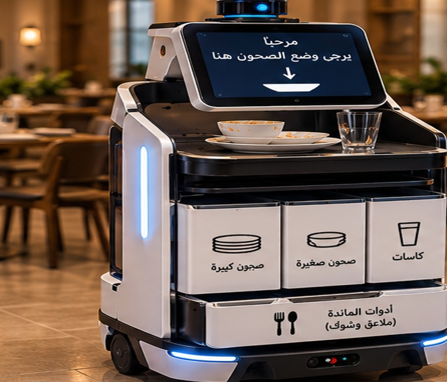

01Graduation Project · Team · In Progress
Autonomous Restaurant Robot
Developing an autonomous indoor restaurant robot that uses sensor-based navigation and obstacle avoidance to support restaurant operations.
RoboticsLiDAREmbedded Systems